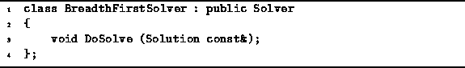
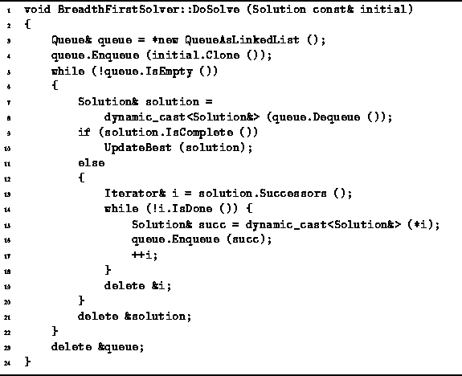

Data Structures and Algorithms
with Object-Oriented Design Patterns in C++
Data Structures and Algorithms
with Object-Oriented Design Patterns in C++
If we can find the optimal solution
by doing a depth-first traversal of the solution space,
then we can find the solution with a breadth-first traversal too.
As defined in Section  ,
a breadth-first traversal of a tree visits the nodes
in the order of their depth in the tree.
I.e., first the root is visited,
then the children of the root are visited,
then the grandchildren are visited, and so on.
,
a breadth-first traversal of a tree visits the nodes
in the order of their depth in the tree.
I.e., first the root is visited,
then the children of the root are visited,
then the grandchildren are visited, and so on.
As shown in Program ,
the BreadthFirstSolver class simply provides
an implementation for the DoSolve member function.

Program: BreadthFirstSolver Class Definition
The body of the DoSolve routine is given in Program .
This non-recursive, breadth-first traversal algorithm
uses a queue to keep track of nodes to be visited.
The initial solution is enqueued first.
Then the following steps are repeated until the queue is empty:


Program: BreadthFirstSolver Class DoSolve Member Function Definition
 Copyright © 1997 by Bruno R. Preiss, P.Eng. All rights reserved.
Copyright © 1997 by Bruno R. Preiss, P.Eng. All rights reserved.